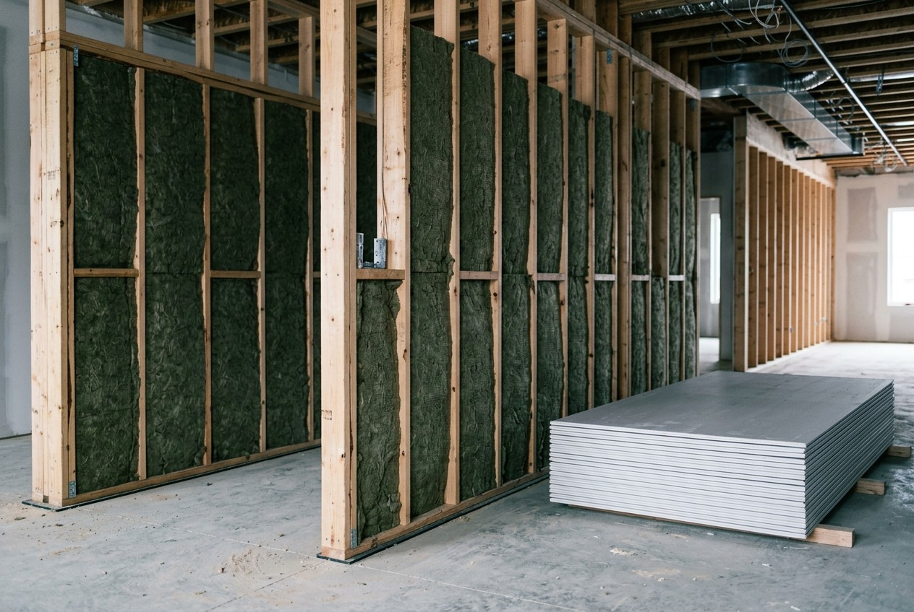

By the Editorial Team | Published: July 2026 | Last Updated: July 2026
Where a Multi-Family Building Stops Being a House
A single-family house and a twenty-unit apartment building can look similar from the curb, but the codes that govern them live in different worlds. The moment a project stacks dwelling units and shares walls, floors, and exits among unrelated households, an entire body of commercial building code activates - fire separation between units, protected exit paths, sprinkler systems, sound isolation, accessibility. These requirements are not optional refinements; they are the difference between a legal, insurable, financeable building and one that never gets a certificate of occupancy. Understanding which code governs, and why, is foundational to designing and pricing multi-family work, and the full treatment of these systems lives in Building Systems and Code for Multi-Family Construction. This primer maps the territory.
The First Fork: Which Code Applies
Residential construction in the United States runs on two model codes, and multi-family projects cross the line between them. The International Residential Code (IRC) governs one- and two-family dwellings and townhouses up to three stories. Everything larger or more communal - apartment buildings, larger condominiums, mixed-use - falls under the International Building Code (IBC), the commercial code. The jump from IRC to IBC is not a small step: it brings occupancy classifications, construction-type requirements, fire-resistance ratings, and engineered systems that the residential code never demands. Knowing which side of that line a project sits on determines nearly everything that follows, from structure to exits to cost.
Construction Types: What the Building Is Made Of
Under the commercial code, every building is assigned a construction type based on the fire resistance of its structural materials, and the type interacts with height and area limits. In broad strokes, buildings range from combustible wood-frame types to noncombustible steel and concrete types, and the more fire-resistant the construction, the taller and larger the building may be. Most low- and mid-rise multi-family housing uses wood-frame construction because it is economical, sometimes over a noncombustible ground floor - a configuration that lets a project reach several stories affordably while satisfying the code's height-and-area math.
| System | What multi-family code requires |
|---|---|
| Construction type | Fire resistance of the structure; caps height and area |
| Fire separation | Rated walls and floors between units and corridors |
| Sprinklers & alarm | Automatic suppression and detection throughout |
| Means of egress | Protected exits, stairs, and travel-distance limits |
| Sound transmission | Minimum acoustic ratings between dwellings |
| Accessibility | Accessible units and common areas per law |
Fire and Life Safety: The Code's Central Obsession
Nearly everything distinctive about multi-family code traces to one goal: keeping a fire in one unit from harming the others, and getting everyone out safely. That goal produces fire-rated separation walls and floors between dwellings, protected corridors and stairwells, automatic sprinklers, interconnected alarms, and strict rules on how far a resident can be from an exit and how many exits a floor must provide. These systems are engineered as an interlocking whole - the sprinklers buy time, the rated assemblies contain the fire, and the protected egress moves people out - and a weakness in any one compromises the others. This is why multi-family plan review is so much more rigorous than residential permitting.
Sound: The Comfort Code Nobody Sees
Alongside life safety sits a quieter mandate: the building code sets minimum sound-isolation ratings between dwelling units, because a wall that stops fire does not automatically stop noise. Impact and airborne sound ratings govern the assemblies between neighbors, and meeting them well is the difference between apartments people renew leases in and ones they flee. Unlike fire ratings, which are pass-fail at inspection, sound performance is often felt only after occupancy - which is why experienced builders exceed the minimum rather than meet it.
Why Code Fluency Is a Development Skill
Code is not a hurdle cleared at the end; it shapes the building from the first sketch. Construction type sets how tall and large the project can be, which drives yield and economics. Fire separation and egress dictate the floor plan's corridors and stair placement. Sprinklers and accessibility carry real cost. A team that designs with the code rather than against it produces a buildable, affordable project; a team that treats code as an afterthought discovers expensive redesigns at plan review. That integration of systems, cost, and design is precisely what a full building-systems-and-code analysis provides.
Frequently Asked Questions
What is the difference between the IRC and the IBC?
The International Residential Code governs one- and two-family homes and townhouses up to three stories; the International Building Code, the commercial code, governs apartment buildings and larger multi-family projects. The jump to the IBC brings occupancy classes, construction types, and engineered fire and egress systems the residential code never requires.
What is a construction type?
A code classification of a building based on the fire resistance of its structural materials, from combustible wood frame to noncombustible steel and concrete. The type interacts with height and area limits - more fire-resistant construction permits taller, larger buildings.
Why do apartment buildings need fire-rated walls between units?
To contain a fire in the unit where it starts long enough for occupants elsewhere to escape and firefighters to respond. Rated separation walls and floors are a core life-safety requirement of multi-family code, working together with sprinklers and protected exits.
Are sprinklers required in all multi-family buildings?
Modern codes require automatic sprinkler systems in essentially all new multi-family construction of any size, along with interconnected fire alarm and detection. Sprinklers are central to the code's life-safety strategy and to the height and area a building is allowed.

What is means of egress?
The code term for the protected path out of a building - exits, stairs, corridors, and doors - governed by rules on how many exits a floor needs, how far a resident may be from one, and how the path is protected from fire and smoke. It is one of the most heavily regulated aspects of multi-family design.
Does building code regulate sound between apartments?
Yes - codes set minimum airborne and impact sound-isolation ratings for the assemblies between dwelling units. Meeting them is mandatory; exceeding them is a quality decision that strongly affects resident satisfaction and retention.
Why does code matter so early in design?
Because construction type, fire separation, egress, and accessibility shape the building's size, floor plan, and cost from the first sketch. Designing with the code produces a buildable, affordable project; ignoring it until plan review produces expensive redesigns.